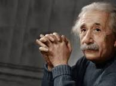

Albert Einstein, Fisico teórico alemão
Físico, matemático

Biografia de Albert Einstein
Albert Einstein nasceu em 1879, na Alemanha, durante sua infância morou em Munique, na sua fase adulta viveu na Suíça. Casou-se com Mileva Maric e juntos tiveram dois filhos. Albert Einstein foi um físico teórico alemão, que desenvolveu a teoria da relatividade geral, um dos pilares da física moderna ao lado da mecânica quântica. Einstein foi considerado o gênio da física e da matemática. Ele é o autor da Teoria da Relatividade, ganhou o prêmio Nobel de Física de 1921.Linha do tempo
1879 Nasce em 14 de março, em Ulm (Alemanha).
1885-1888 Escola Católica de Munique.
1895-1896 Escola Suíça.
1896 Renuncia à cidadania da alemã.
1907 Princípio da Equivalência.
1915 E = m.c^2
1921 Prêmio Nobel
1955 Morre nos EUA
Se quiser saber mais sobre Albert Einstein, Clique Aqui
Fontes utilizadas na página: wikipedia e ebiografia